🥇 1st Place Professional
Dinah Soar Days Chalk Art Contest, Vernal, UT
🎨 People's Choice
Midland Square Chalk Art Affair, Tremonton, UT
🥇 1st Place Professional Color Pencils
Taylorsville Art Show, Taylorsville, UT
🥇 1st Place Professional Pastels
Taylorsville Art Show, Taylorsville, UT
🥇 1st Place
Herriman Chalk Art Contest, Herriman, UT
🥇 1st Place
Salina Eyes to the Sky Chalk Art Contest, Salina, UT
🥇 1st Place
Tooele Chalk Art Contest, Tooele, UT
🥇 1st Place Professional
Summerfest Chalk Art Contest, South Jordan, UT
🥉 Honorable Mention Professional 2D
South Jordan Art Show, South Jordan, UT
🥇 1st Place
Santaquin Chalk Art Contest, Santaquin, UT
🎨 Official's Choice
Kayenta Street Painting Festival, Ivins, UT
🥈 2nd Place Ceramics
Midvale City Art Show, Midvale, UT
🥈 2nd Place Drawing Art
Midvale City Art Show, Midvale, UT
🎨 Best Use of Color
Alpine Chalk the Walk, Alpine, UT
🥈 2nd Place Adult
Alpine Chalk the Walk, Alpine, UT
🥉 3rd Place Adult
Butlerville Chalk Art Contest, Cottonwood Heights, UT
🎨 People's Choice
Midland Square Chalk Art Affair, Tremonton, UT
 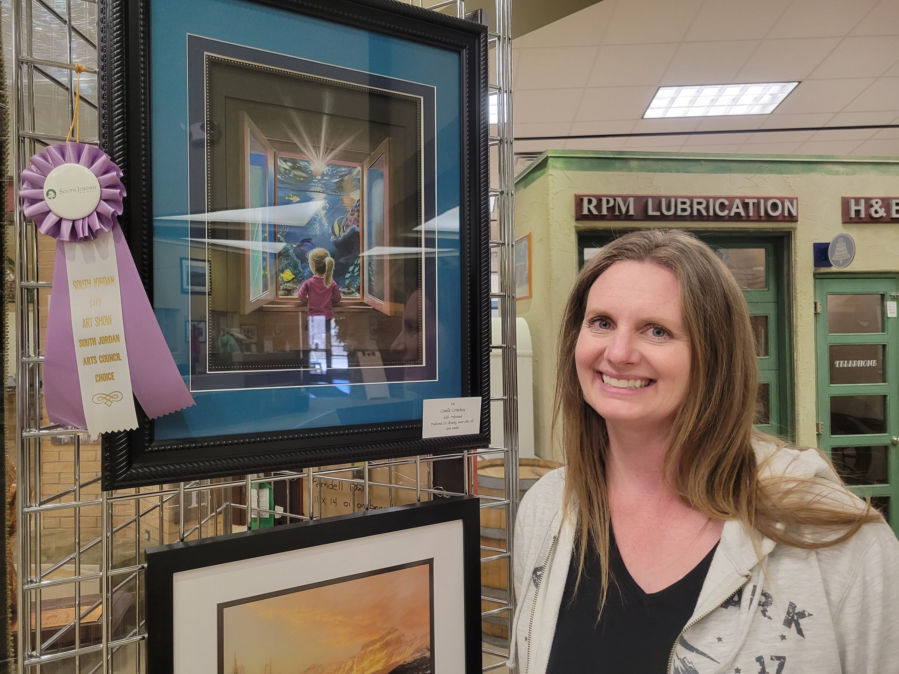
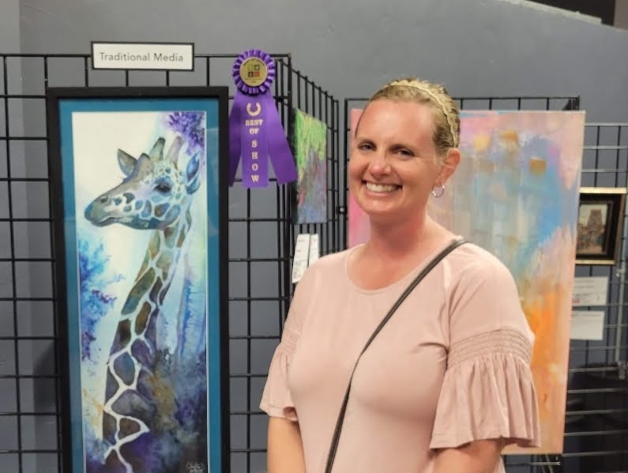
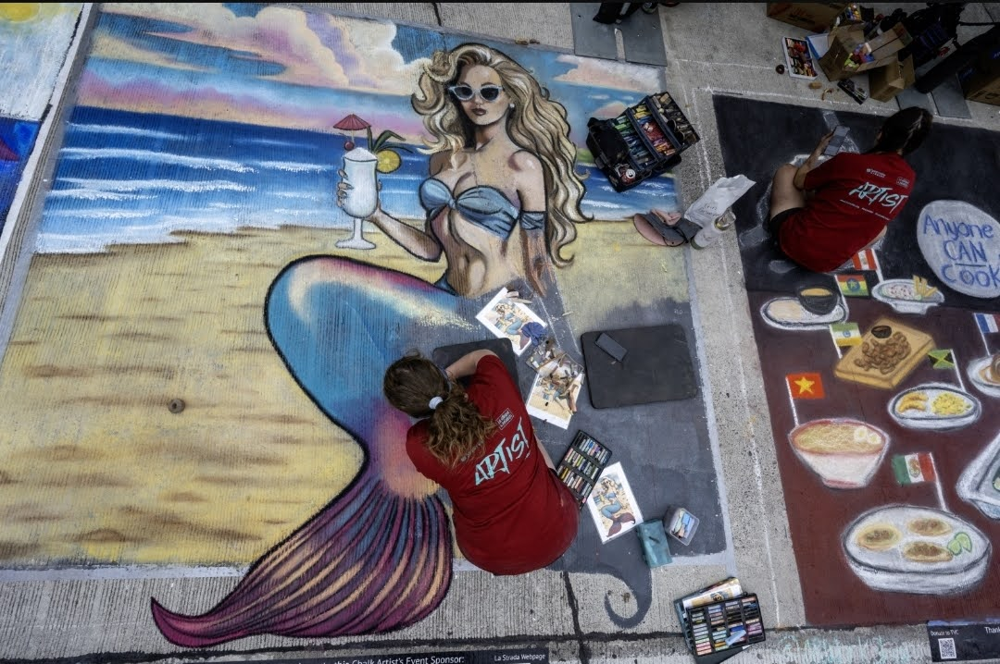
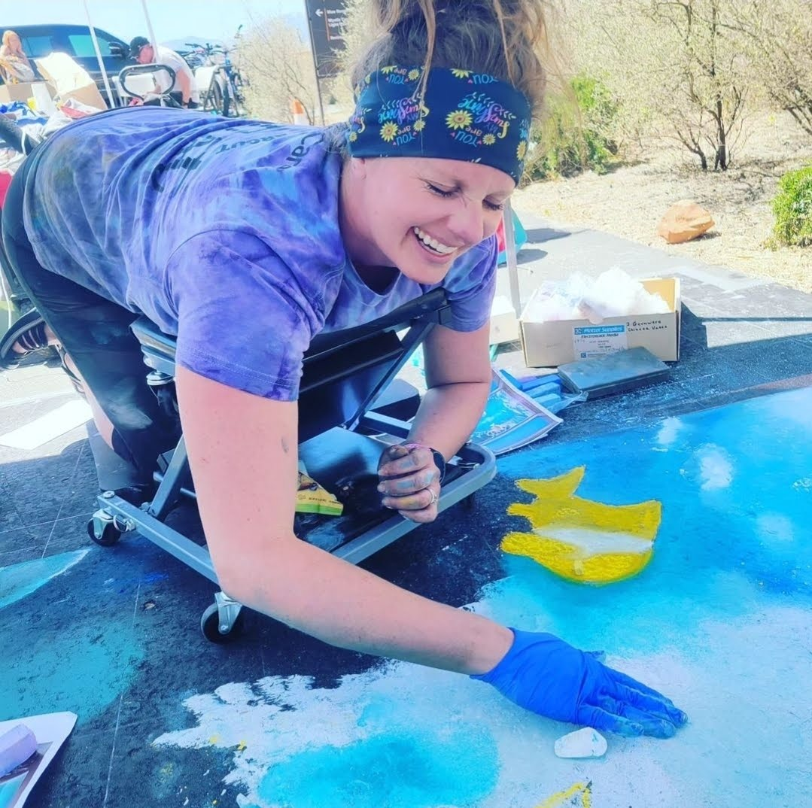
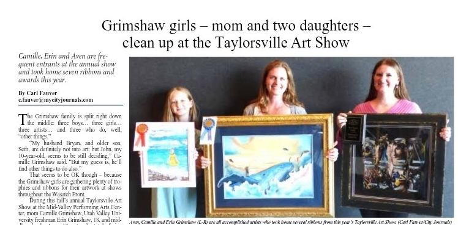
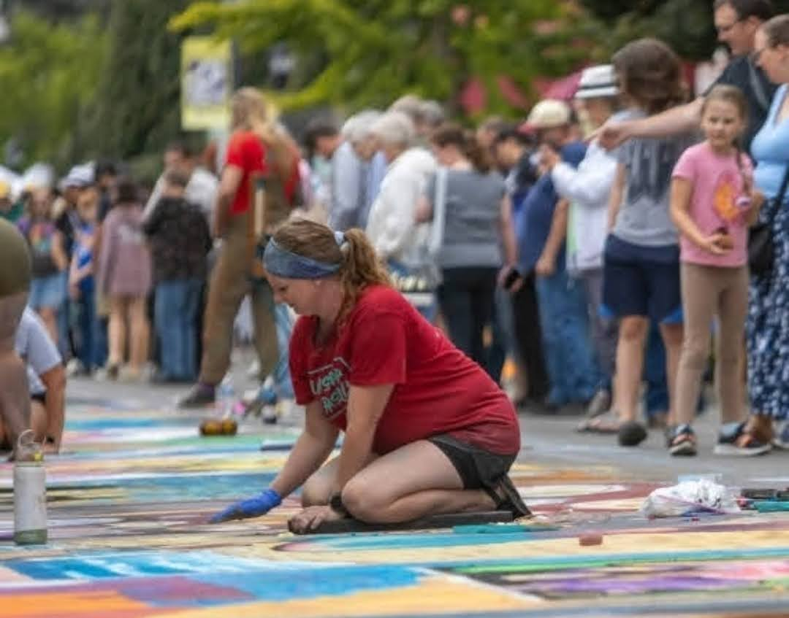
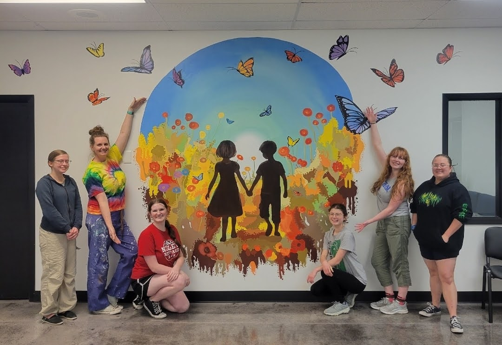
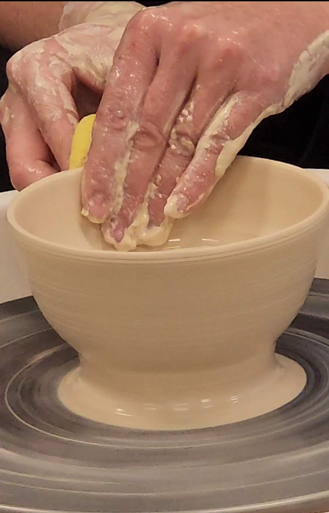
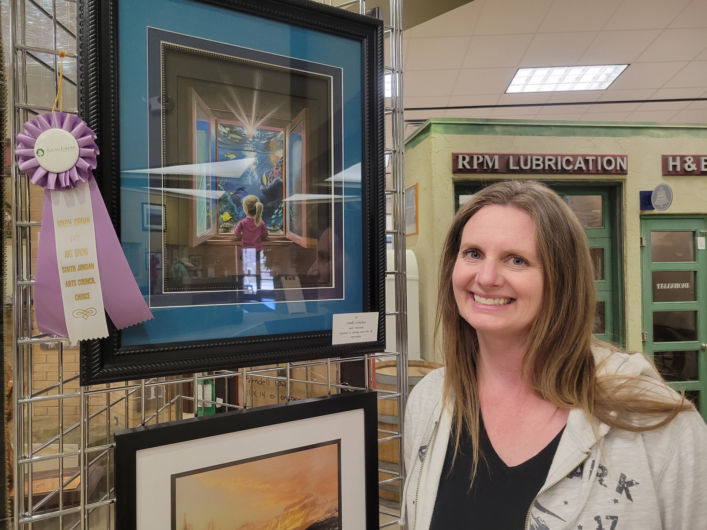
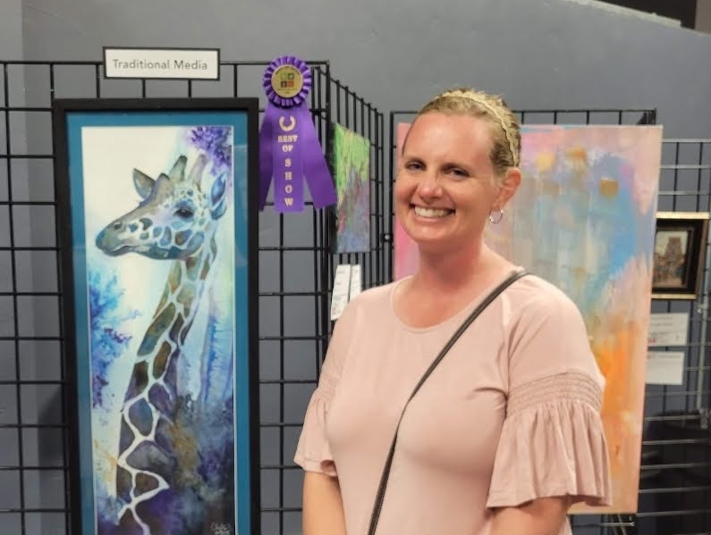
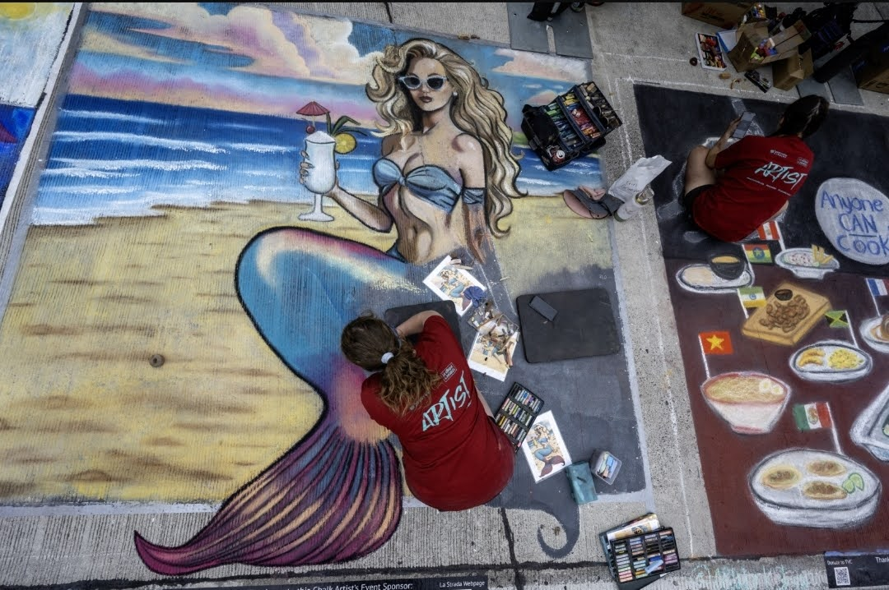
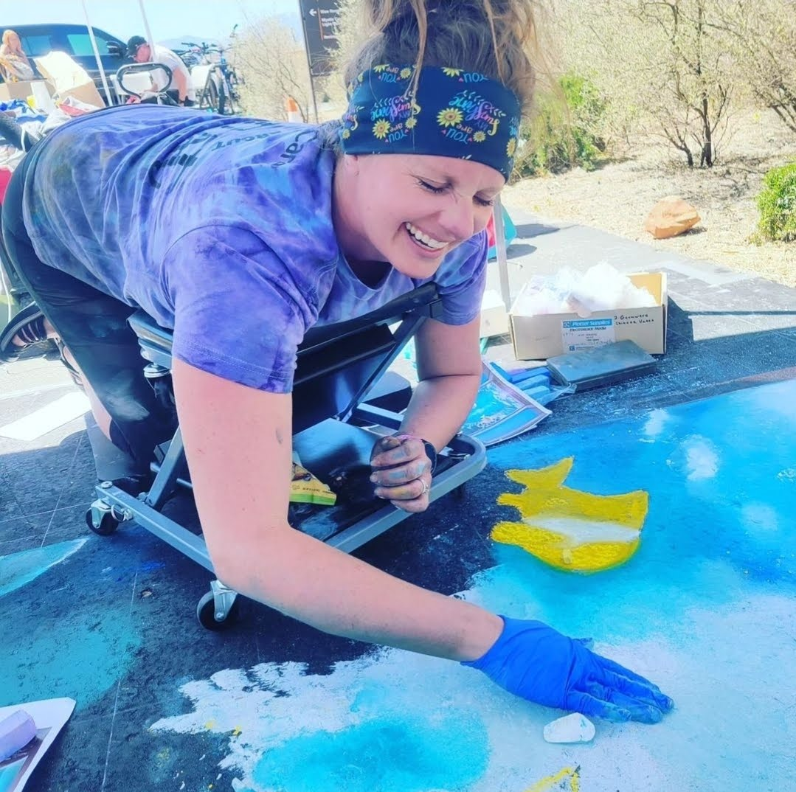
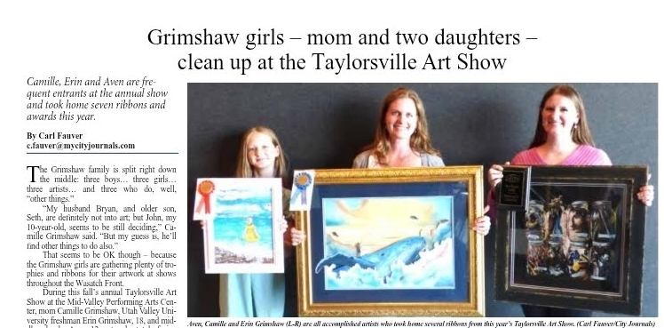
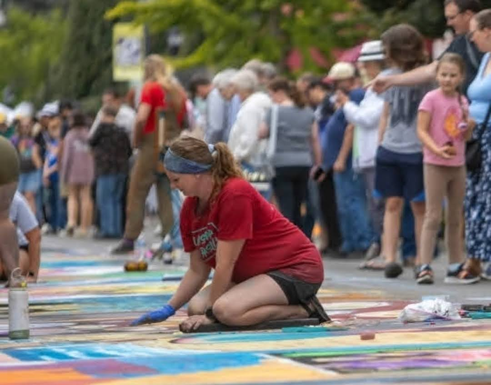
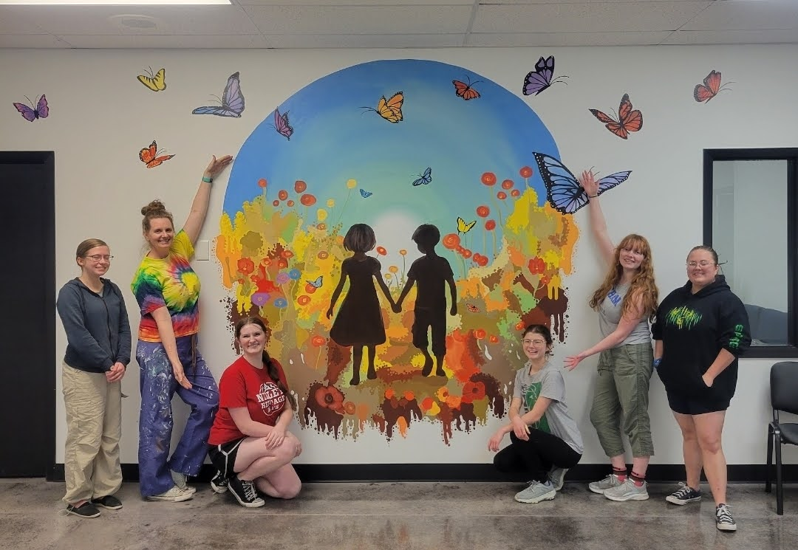
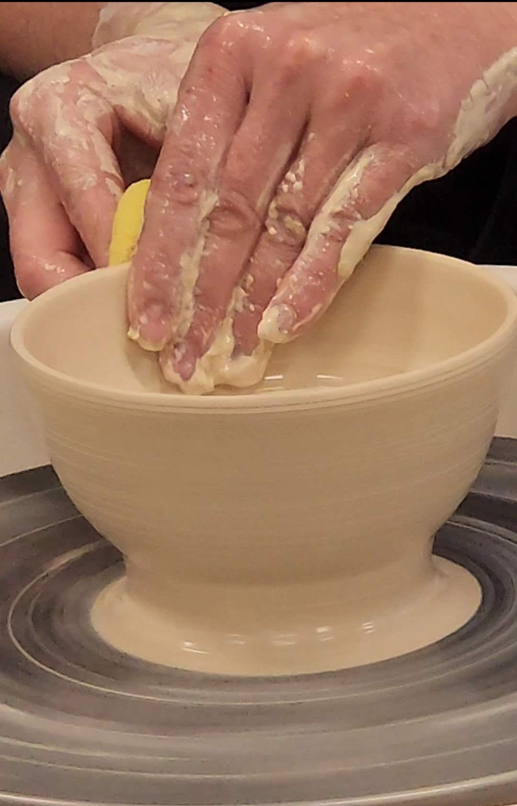